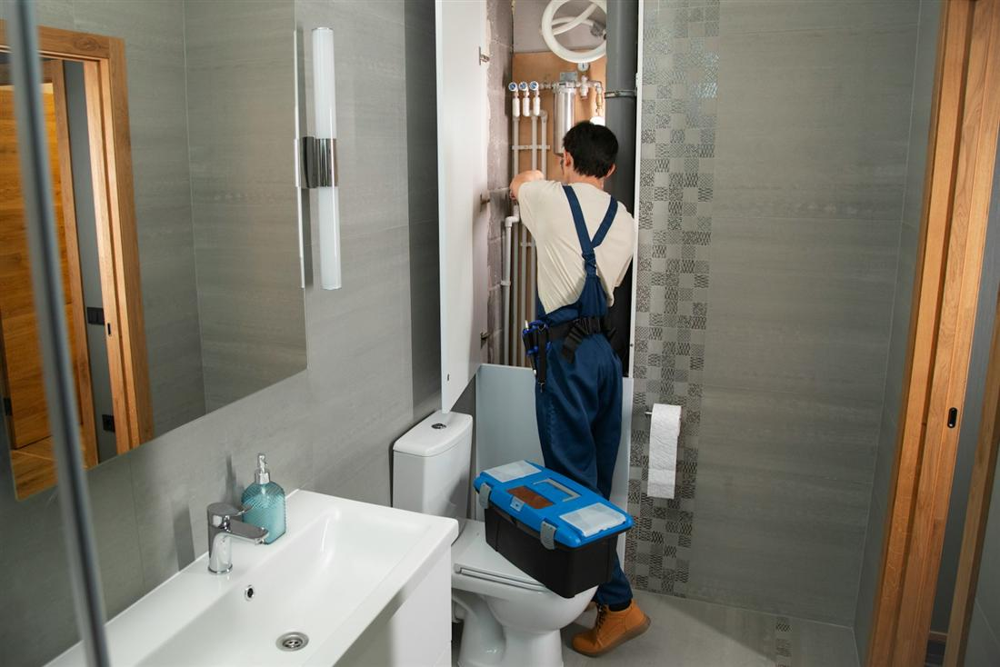
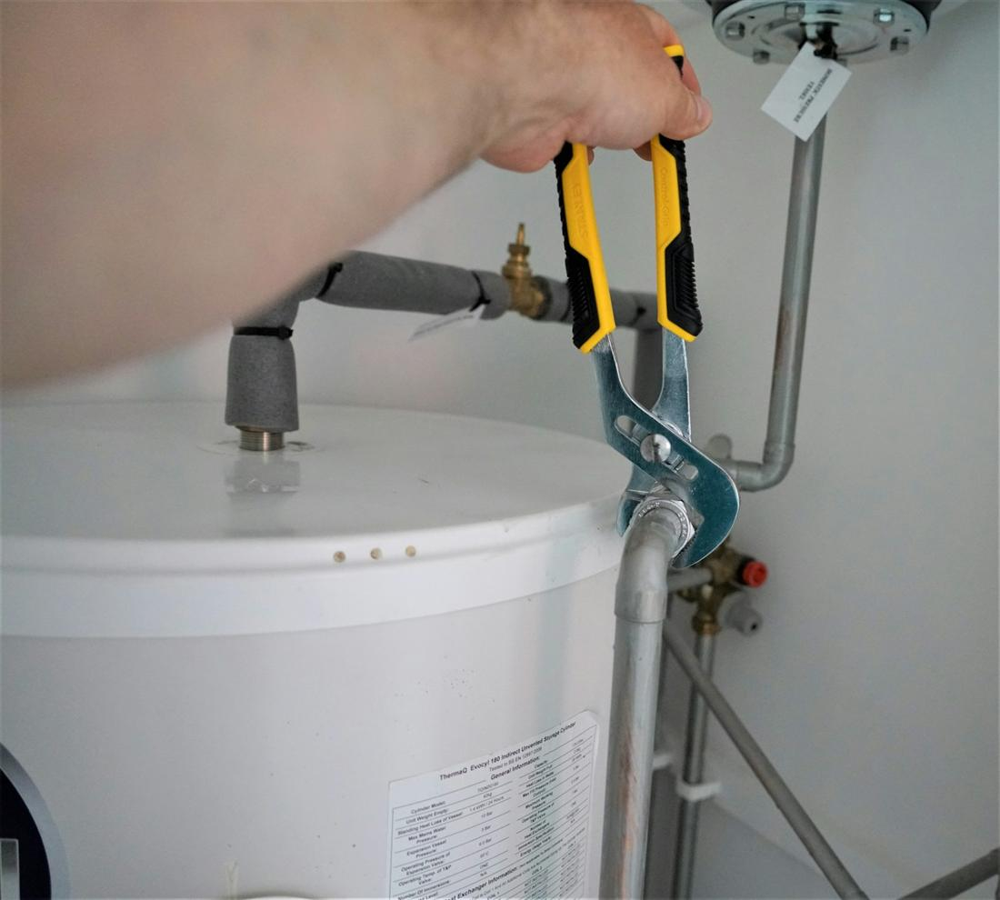
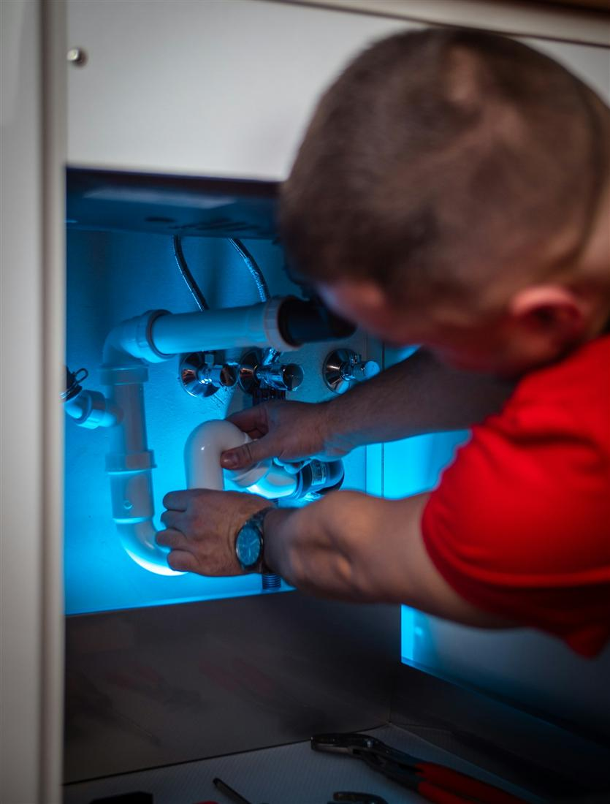
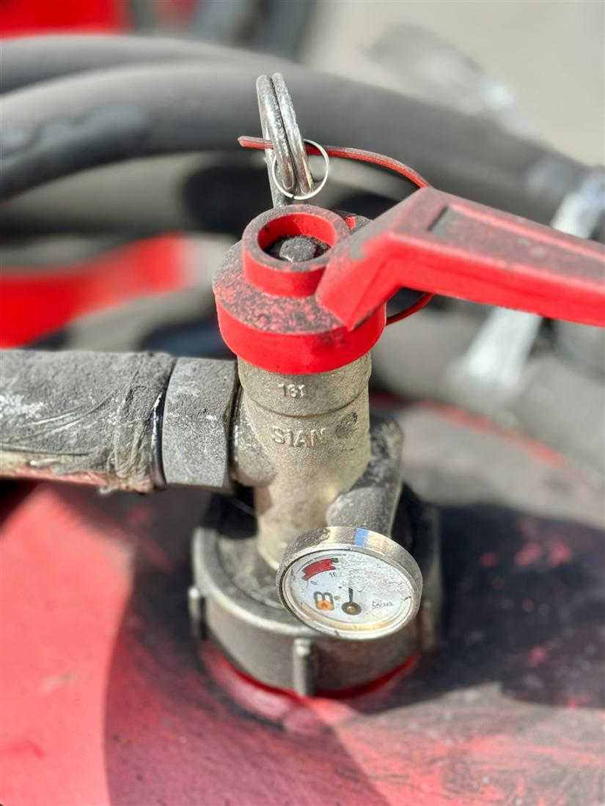

Carvin (62220) et alentours
Votre plombier à Carvin et dans les environs
Dépannage, fuites, chauffe-eau et salles de bains : un artisan plombier installé rue de l'Égalité à Carvin depuis 2008.

Nos services
Ce que nous faisons pour les particuliers de Carvin et des environs.

Plomberie et dépannage
Fuite, robinet qui goutte, canalisation bouchée : on intervient chez vous.
En savoir plus →
Chauffe-eau et ballon d'eau chaude
Plus d'eau chaude ? Remplacement ou réparation de votre chauffe-eau.
En savoir plus →Salle de bains
Rénovation de salle de bains, remplacement de baignoire par une douche.
En savoir plus →
Plomberie sanitaire
Installation et rénovation de la plomberie : alimentation, évacuations, appareils sanitaires.
En savoir plus →
Pourquoi nous appeler
Depuis 2008
Une entreprise de Carvin en activité depuis 2008.
Un contact direct
Un seul numéro, celui de l'entreprise : 07 71 67 21 07.
Près de chez vous
Installés 14 rue de l'Égalité, à Carvin.
Nos conseils
Des réponses simples aux questions qu'on nous pose souvent.
Fuite sous l'évier : que faire en attendant le plombier ?
Les premiers gestes pour limiter les dégâts.
WC bouchés : que faire, et que ne pas faire
Les bons gestes, et ceux qui aggravent la situation.

Couper l'eau : où est le robinet d'arrêt et comment s'en servir
Le geste à connaître avant une fuite.
Zone d'intervention
Basés au 14 rue de l'Égalité à Carvin, nous intervenons dans les communes voisines :
- Carvin
- Libercourt
- Oignies
- Courrières
- Meurchin
- Estevelles
- Pont-à-Vendin
- Courcelles-lès-Lens
- Hénin-Beaumont
- Annœullin
Votre commune n'est pas dans la liste ? Appelez-nous, on vous dira si on peut se déplacer.
Un projet, une panne, une question ?
Appelez directement : vous parlez à l'entreprise, pas à une plateforme.